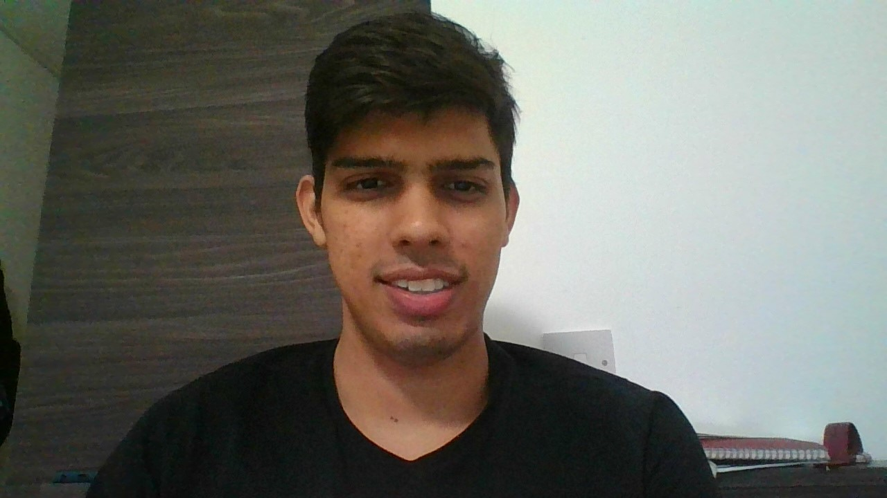

Ketan Tomar

Professional Summary
A Computer Science Master's graduate, previously a Frontend Developer, now thriving as a Software Engineer at Optblend. Eager to learn, explore new possibilities, and contribute to innovative solutions in the dynamic tech landscape.
Work Experience
Software Engineer at Optblend
- Implemented algorithms for equal risk optimization and hierarchy risk parity in both frontend and backend systems that presented intricate challenges, with algorithmic complexity reaching a factor of 10, demanding precise execution and seamless integration to meet user expectations.
- Collaborative efforts involved refining Python algorithms, achieving an impressive 20% increase in algorithmic efficiency. Simultaneously, API development streamlined communication, reducing integration complexities by 30%. Our strategic approach to intuitive UI/UX design resulted in a 25% enhancement in user comprehension and engagement
Frontend Developer at HosterDaddy Pvt Ltd
- Manage challenges that include to work towards seamless integration, security, UX optimization, responsive design, and effective collaboration.
- Implemented scalable architecture, collaborate with backend for seamless integration, prioritize security practices, conduct user research for optimal UX, ensure responsive design, and establish communication channels
- These actions yield a responsive UI for 10,000 customers, cohesive frontend with unified experiences, heightened security safeguarding customer data, intuitive interface, adaptive design, and improved collaboration in the hosting platform serving Microsoft SPLA Partner and Cloud Linux.
Skills
- Technical Skills
- Python
- JavaScript
- CSS
- HTML
- Data Structures and Algorithm
- Flexbox
- Nodejs
- SQL
- React
- Soft Skills
- Effective Communicator
- Problem Solving
- Team Player
- Time Management
- Empathetic
- Leadership
Education
- Masters in Computer Science , University of Liverpool , Liverpool-United Kingdom
- Graduation in Electronics and Communications , Guru Gobind Singh Indraprastha University , New Delhi-India
Others
Hobbies
Contact Details